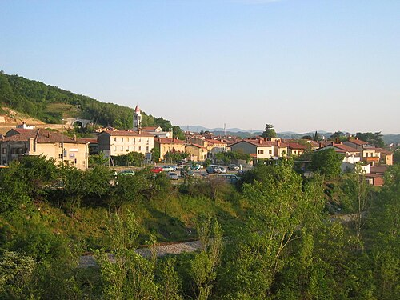

Дата і місце народження: 31 липня 2007 року, м. Київ
Освіта: Повна середня освіта, випускник школи "Оптіма", на разі студент 3-го курсу КПІ ім. І. Сікорського, Факультету інформатики та обчислювальної техніки, спеціальності 126 "Інформаційні системи і технології", освітньої програми "Інформаційне забезпечення робототехнічних систем"
Солкан — це історичне стародавнє поселення, збудоване у 1001 році, розташоване у західній Словенії, розташоване на кордоні з Італією. Сьогодні воно є передмістям та важливою складовою частиною міста Нова Гориця. Місто лежить у мальовничій долині, де альпійська річка Соча виходить на рівнину й устремляється до Адріатичного моря. Населення становить близько 3 200 осіб.
